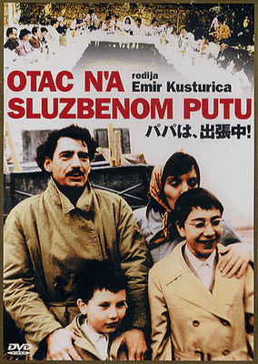
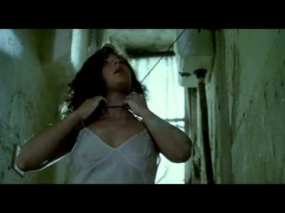
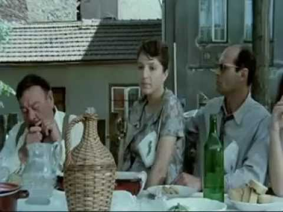

Valter brani Sarajevo, ratni je bosanskohercegovački film Hajrudina Krvavca iz 1972. godine, uz Bulajićevu Bitku na Neretvi vjerojatno najpoznatiji i najpopularniji film partizansko-ratne tematike snimljen u socijalističkoj Jugoslaviji.Uloga Valtera kao lika slobodna je interpretacija životopisa stvarnog antifašističkog borca i zapovjednika sarajevskih ilegalaca u Drugom svjetskom ratu, Vladimira Perića Valtera, koji je bio i jedan od pripadnika obavještajnih služba bivše Jugoslavije.
Miris dunja bosanskohercegovački je igrani dramski film snimljen 1982. u režiji Mirze Idrizovića. Scenarij su napisali reditelj Mirza Idrizović u saradnji sa Zukom Džumhurom i Karelom Valterom. Miris dunja snimljen je u produkciji Sutjeska filma. Direktor fotografije bio je Danijal Šukalo, koji je na 29. filmskom festivalu u Puli 1982. godine dobio nagradu za rad na kameri u filmu. Također na istom festivalu film je osvojio nagradu za najbolji scenarij. Na filmskom festivalu u Moskvi 1983. bio je nominiran za "Zlatnu nagradu". Za muziku je bio zadužen Esad Arnautalić, a montažu Zora Branković.Radnja filma se dešava u Sarajevu 1941. Zahvaljujući svom prijateljstvu sa nacistima, Sarajevski biznismen se brzo bogati tokom Drugog svjetskog rata. Međutim, njegova opčinjenost jednom Jevrejkom dovest će do tragedije.
Otac na službenom putu



Otac na službenom putu priča je o dječaku kroz čiju se svijest i osjećanja prelamaju burne 1950-e. Vrijeme u kojem živi nije naklonjeno ni njemu ni njegovom ocu, zaposlenom u Ministarstvu rada. Splet intriga dovodi oca u zatvor. On je jedan od ondašnjih uhapšenika čija krivica nikad nije utvrđena. Žrtva je vremena u kojem se Jugoslavija, odupirući se naletu staljinističkog dogmatizma, našla u situaciji da počini greške. Dječak postaje svjedok mnogih konfliktnih situacija. Nikad neće otkriti amidžinu ulogu u očevom hapšenju, a neće saznati ni to da je žena koja mu je poklonila toliko željenu nogometnu loptu prouzrokovala nesreću njegove porodice.